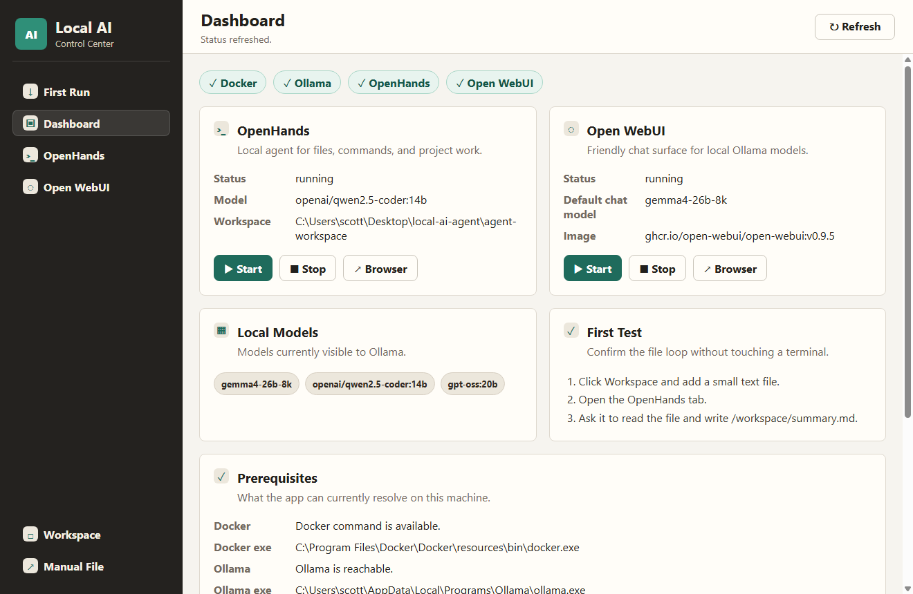

Less terminal juggling
Start and stop OpenHands and Open WebUI from a dashboard instead of remembering Docker commands, container names, and ports.

Local-first AI operations for Windows
Local AI Control Center brings first-run setup, hardware checks, Ollama, OpenHands, Open WebUI, workspace access, health checks, and local test runs into a single GUI, so you can use local models without managing a pile of terminal commands.
Honest status: Windows-only and built for hefty local AI machines: roughly 16 GB available VRAM, 32 GB RAM, and room for model downloads.
The problem
Start and stop OpenHands and Open WebUI from a dashboard instead of remembering Docker commands, container names, and ports.
Scan CPU, RAM, disk, GPU, and VRAM, then install Docker Desktop and Ollama and pull required models from the GUI.
The writable workspace is explicit. Open it from the app, know where files live, and keep agent edits contained.
What it controls
This is not a new model runtime or a hosted AI service. It is a local desktop control layer for the stack: Ollama for models, OpenHands for file and project work, and Open WebUI for everyday chat.
Current product status
Local-first, not cloud-first
Download the current Windows build, inspect the repo, or fork it for your own local AI workstation.